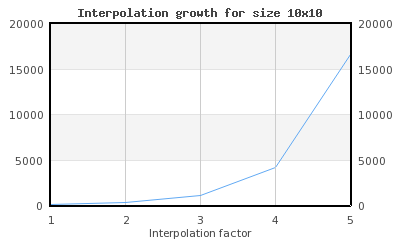
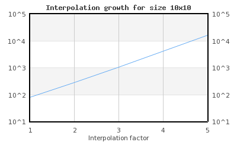

In order to create Radar graphs the module
"jpgraph_contour.php" must first be included.
Note
The Pro-version (>= v3.1) also includes a module
"jpgraph_contourf.php" which is also supports
filled contour plots as well as labelling in the plots of the isobar lines.
The pro-version also uses a more advanced adaptive-mesh algorithm that give
better resolution without manual interpolation of the original data. Both
triangular and rectangular interpolation meshes are supported. The filled
contour is described in Chapter 23. Filled contour graphs
Contour plots are used to plot the isobar lines (height curves) of a three
dimensional (3D) graph. The contour plot itself is only a two-dimensional plot and
looks like an ordinary topographic map. An example of a contour graph is shown in
Figure 15.75. A basic contour graph ( basic_contourex01.php)
A contour graph is both similar and different from other types x-y graphs.
-
A contour graph uses the standard x-y
class Graphas basic graph canvas -
A contour graph has all the standard graph formatting options
-
The legend is automatically generated
-
The input data is a matrix and not an array
There are primarily four main parameters that can be used to control the apparency of the contour plots
-
the number of isobar lines, by default 10 isobar lines are used
-
the level of data grid interpolating, i.e. to give the appearance of smoother isobar lines it is possible to tell the library to create a number of intermediate points between the given points in the input data matrix. It is important to note that this does not create any further real information it only creates smoother lines under the assumption that it is valid to assume linear interpolation between the original data points.
The level of interpolation is specified as an integer in the practical range 1 to 5. A level of 1 corresponds to just keeping the original data, a level of 2 corresponds to subdividing the original data points in two, i.e. one extra interpolated points is created in both x- and y-direction and so on. A level of 3 corresponds to further sub-divding the level 2 matrix one more time.
Even though it is theoretically possible to use an arbitrary interpolation factor the library does not allow an interpolation factor larger than 5. The reason is purely computational since the total number of data points increases very quickly.
For example if the original grid has size 10x10 (=100 data points) interpolating this grid with a factor of 5 will generate a new matrix of size 145x145 (=21025 data points).
-
flip around the Y-axis. By default the first row in the input matrix corresponds to y=0, however this also means that the plotted contour will be flipped compared with the input matrix since y=0 is at the bottom of the graph. If for visual appearance reason one wants the input data matrix to have the same orientation as the resulting graph it is possible to have the library interpret the last row in the input data matrix as y=0 instead
-
the color of the isobar lines. By default they will be assigned from the natural color spectra with pure dark blue corresponding to the lowest point in the plot and pure red corresponding to the highest isobar.
The remaining possibilities to adjust the appearance of the contour plot corresponds to the standard ways of changing the layout of the graph, for example adding titles, adjusting colors and changing the type of axis to be displayed.
The scale of the contour plot is by default the natural scale, i.e. the points are assumed to be numbered (0..n) where n is the number of points in the corresponding direction and also corresponds to each entry in the input data matrix.
The input data to a contour graph is a matrix. The value at each entry in the matrix represents the heights at the specified (row,col) in the matrix. In all of our example we will use the following data matrix
1 2 3 4 5 6 7 8 9 10 11 12 | $data = array( array (0.5,1.1,1.5,1,2.0,3,3,2,1,0.1), array (1.0,1.5,3.0,5,6.0,2,1,1.2,1,4), array (0.9,2.0,2.1,3,6.0,7,3,2,1,1.4), array (1.0,1.5,3.0,4,6.0,5,2,1.5,1,2), array (0.8,2.0,3.0,3,4.0,4,3,2.4,2,3), array (0.6,1.1,1.5,1,4.0,3.5,3,2,3,4), array (1.0,1.5,3.0,5,6.0,2,1,1.2,2.7,4), array (0.8,2.0,3.0,3,5.5,6,3,2,1,1.4), array (1.0,1.5,3.0,4,6.0,5,2,1,0.5,0.2)); |
By default the entry (0,0), i.e. row=0, col=0 will be positioned at graph position (0,0), i.e. the lower left corner. Since this will represent an inverted image compare to the data matrix. In order to have the graph oriented in the same way as the data matrix, i.e. entry (0,0) positioned in the top left corner the method
-
ContourPlot::SetInvert($aFlg=true)
In order to get a smooth contour plot it is necessary to have adequate number of data points. What consists "adequate" number depends on the overall graph size. The larger graph the more points are needed. To help crate smooth contour plot the library offers automatic linear interpolation to specified depth. It is important to note that this does not increase the accuracy. It merely creates artificial point to draw smoother curves. This technique is described in detail in Understanding mesh interpolation
Tip
If the data for the matrix is available in a file a convinient way to get
hold of the dat in the file is to use the utility class
ReadFileData to get hold of the data using the method
ReadFileData::FromMatrix($aFile,$aSeparator=' ') which read the
matrix from a file. Each row of the matrix must be a separate line and each
cell is separated with the character specified as the second argument. By
default a space is used as separator. All values read back are converted to
floating point numbers (double precision). The following short example shows
how easy this is to use
1 | $data = ReadFileData::FromMatrix('matrixdata.txt'); |
Figure 15.75. A basic contour graph ( shows the most basic contour plot.
This is crated by first instantiating a graph and then creating an instance of
basic_contourex01.php)class ContourPlot which is added to the graph.
The constructor for class ContourPlot has the following
signature
-
ContourPlot::__construct($aDataMatrix, $aIsobar=10, $aFactor=1, $aInvert=false, $aIsobarColors=array())$aDataMatrix, The input data$aIsobar, The number of isobars if the argument is an integer or an array specifying the exact locations of each isobar if the argument is an array$aFactor, Grid interpolation factor$aInvert, Invert the data matrix so the matrix entry (0,0) corresponds to the top left corner$aIsobarColors, Optional specification of isobar colors
This means that the common structure to create a basic contour plot will be
1 2 3 4 5 6 7 8 9 10 11 12 13 14 15 16 17 18 19 20 21 22 | $data = array ( array ( ... ) ); // Basic contour graph $graph = new Graph($width,$height); $graph->SetScale('intint'); // Adjust the margins to fit the margin $graph->SetMargin(30,100,40,30); // Setup $graph->title->Set('Basic contour plot'); $graph->title->SetFont(FF_ARIAL,FS_BOLD,12); // A simple contour plot with default arguments (e.g. 10 isobar lines) $cp = new ContourPlot($data); // Display the legend $cp->ShowLegend(); $graph->Add($cp); |
Since the most common format for contour graphs is to show axis on all sides we should add the line
1 | $graph->SetAxisStyle(AXSTYLE_BOXOUT); |
to our previous example so we get the effect shown in Figure 15.76. Adding axis on all sides ( . To show the effect of flipping the
data around the center line we have to add the following linebasic_contourex02.php)
1 | $cp->SetInvert(); |
and get the result of adding this line is shown in Figure 15.77. Flipping the data around the center line ( basic_contourex05.php)
|
|
|

As mentioned above the library uses 10 isobar lines by default. The number of isobar lines can be adjusted by specifying a second integer argument to the constructor of the contour plot. For example to use only 5 isobar lines the construction of the contour plot would be changed to
1 | $contourplot = new ContourPlot($data,5); |
The result of changing this in the previous example is shown in Figure 15.78. Using only 5 isobar lines ( basic_contourex04.php)
The values for the isobars are determined by finding the lowest and highest point in the input data matrix and then spreading the isobars evenly between these extreme points.
In some applications however it is necessary to have better control over where exactly the isobars are placed and for this reason it is possible to tell the library exactly at what values the isobars should be.
This is done by providing an array with the values of the isobars instead of a single number in the creation of the contour plot as the following example shows
1 2 3 4 | $isoBars = array( 0.1, 0.2, 0.3, 0.4, 0.5, 0.6 ) $cp = new ContourPlot($data, $isoBars); |
The isobar colors can be adjusted by specifying a color array that specifies the color for each isobar.
However, there is some simpler changes that ca be made to change the colors without having to go through the "trouble" of såspecifying a color array.
There are usually two reasons for changing the default color spectra.
-
to use more high contrast colors
-
to use only black and white colors
This can be accomplished with a call to the method
-
ContourPlot::UseHighContrastColor($aFlg=true,$aBW=false)
as the following example shows
1 2 | $cp = new ContourPlot( $data );
$cp->UseHighContrastColor( true ); |
The above example will only use a blue to red color scale and avoid the "low-contrast" greenish middle color spectrum colors.
By also setting the second argument to the high contrast method to true the colors are restricted to only black and white. This will of course make it impossible to exactly know the value each isobar represents but could be useful for gaining some insight in the topography of a graph and would allow better printing on black and white devices.
Specifying manual colors of the isobar can be done in two ways.
-
By specifying the color array as the fifth argument to the constructor of ContourPlot as shown in Creating a contour graph
-
By using the method
ContourPlot::SetIsobarColors($aColors)
Caution
The number of colors specified must match the number of isobars.
As mentioned above it is possible to use mesh interpolation to generate smoother contour graphs. In order to better understand the effect of specifying different interpolation factors we will show how what effect this have.
The data we will be using is given by the following data matrix
1 2 3 4 5 6 | $data = array(
array ( 12,7,3,15 ),
array ( 18,5,1, 9 ),
array ( 13,9,5,12),
array ( 5,3,8, 9 ),
array ( 1,8,5, 7 )); |
A basic contour graph using the above data is shown in Figure 15.79. Interpolation factor=1 ( basic_contourex03-1.php)

In order to specify a grid interpolation factor we need to specify this as the third argument in the constructor for the contour plot. So in order to specify a interpolation factor of 2 we would add the line
1 | $contourplot = new ContourPlot($data,10,3); |
To see the difference between different interpolation factor Figure 15.80. Interpolation factor=2 ( and Figure 15.81. Interpolation factor=3 basic_contourex03-2.php)( shows the effect of using both a
grid interpolation factor of 2 and 3 on the example in Figure 15.79. Interpolation factor=1 basic_contourex03-3.php)( basic_contourex03-1.php)
|
|
|
We can now make two observations based on the above two figures
-
The lines get smoother the higher interpolation factor we use
-
The automatic scale has changed. This is not surprising since we have in effect increase the number of data points each time we increase the interpolation factor. The scale corresponds to the matrix size (an entry in matrix at position (r,c) corresponds to the point (x=c,y=r) in the graph.)
Initially we had a data matrix of size 5x4=20 data points, after doing one interpolation (factor=2) the data matrix will have a size of 9x7=63 data points and after doing one more interpolation (factor=3) the data matrix will have a size of 17x13=221 data points.
If we would have done one more interpolation we would have a data matrix of size 33x25=825 data points.
The exponential growth of the total number of data point for a 10x10 matrix is shown in Figure 15.82. The exponential growth of the data size due to grid interpolation factor
(. This also makes a good example of using a logarithmic y-scale. If the graph is a straight line when plotted against a logarithmic scale this confirms our suspicion that this is indeed a exponentially growing function. Figure 15.83. The exponential growth of the data size due to the grid interpolation factor (log scale)interpolation-growth.php)(shows a variant with a logarithmic y-scale (which confirms our suspicion.)interpolation-growth-log.php)
Tip
The helper class to do the actual interpolation can also be used directly in other context. In order to create a new interpolated data matrix with a specific interpolation factor the following code snippet can be used.
1 2 3 4 5 6 | $dataMatrix = array( ... ); $factor = ... ; $grid_interpolate = new Interpolate(); $dataMatrix = $grid_interpolate->Linear($dataMatrix, $factor); |
Tip
There is also a utility function
doMeshInterpolate(&$aData,$aFactor) that can be
sued to interpolate a matrix in place. This creates the necessary class,
interpolates its first argument and then fills the argument with the
interpolated data. By using call by reference some data copying is
avoided.
|
Figure 15.82. The exponential growth of the data size due to grid interpolation factor  |
Figure 15.83. The exponential growth of the data size due to the grid interpolation factor (log scale)  |